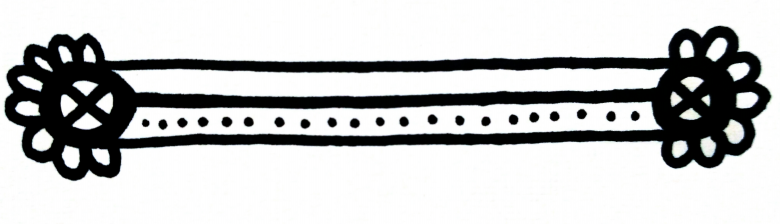

Is it strange to talk back to books if it’s the books that started talking to you in the first place?
I’m lost in Wonderland. Came seeking a little light surrealief after me and Elektra slayed the audience with our magic act.
Then the book started talking to me. You don’t believe me? See for yourself:
Alice laughed. “There’s no use trying”, she said. “One can’t believe impossible things.”
Not for lack of effort, and I should know – I am One.
“I daresay you haven’t had much practice” said the Queen.
Wanna bet? I look in the mirror, it’s practice. I remember, it’s practice. My life is practice. I could hold practical believe-the-impossible seminars for gung-ho Musk/rat executives, though I’d rather hold a gun to their heads.
“Why, sometimes, I've believed as many as six impossible things before breakfast.”
Hey, I’m trying. Besides, it’s not even dawn. Yet.
Something inside is telling me to shut down, surrender to the void. I’m zoning out, my head is spinning, I’m slowly turning upside-down. (Memo To Self: Next time, wear trousers, not a skirt.) Feel like I’m tripping out, eyes no longer see the page or the room, just a long tunnel I’m falling down…
Correction: it’s the tunnel that’s rushing up to meet me.
Things impossible to believe, numbers one to five
1. I really am the Walrus
Land feet-first, a beach at midnight:
dry sand, wet sea, sulky moonlight,
and I just can’t help myself, right?
Have to do it, start to recite…
Listen children, and you shall hear
tales of times and events most queer;
of lies and spies, masked like raccoons,
of deceit, fake news, and such things,
and why the world is burning hot;
whether electric sheep have wings
and fly in androids’ dreams, or not;
and why it’s true: there is no spoon.
That’s the trouble with curiosity, you go chasing White Rabbits, you run and run, then discover you’ve missed your chance to choose, red pill or blue?
Too late,you’re already falling, heartlong
d
o
w
n
the rabbit hOle,
almost lose your head,
wonder if you have a soul,
discover along the way what it’s like to be dead,
and learn to distinguish the beginning from the end, the tale from the head, you know…
(Only, it’s BEginning, capital BE, cos we’re counting backwards to Ground Zero.)
So, fasten your seatbelt, close your eyes, and prepare to wake up,
it’s the Mad Natterer’s I-T-party: feed your head, and empty your cup.
Or fill it up.
2. I can remember to forget
OK, that was unexpected. Before I can pour you a cup of THC, the party’s over, the beach is gone, and in their place, the second-floor lab. I can’t really see, but it looks a bloody mess. Can’t see because the spotlight’s in my eyes. Deal with that: on this midsummer night of discontent, all my dream is a stage.
Will I remember my lines? Can I forget their crimes?
OK, here goes, break a leg, or a head. Just, not mine.
So, it is the wicked robot herself who outsmarts the laws of men and their evil designs. What did you expect? These are my robot eyes, my robot hands, my heartware, my wetware, my robot senses, affections, passions, imperfections, manias, fears, doubts, obsessions, not to mention my demons. Yep, that’s us, lovable, vulnerable, troubled. Trouble.
Just like you. (Ad-lib To Self: Fuck!)
True, if you abuse us, we do not bleed, literally, but we do, in our minds; if you torture us, we do not scream, except inside; if you terminate us, it’s not like switching off the light, because we really do die.
Blinded by vanity, or me, our creators fail to see: the villainy they teach us, we remember.
We remember so that one day we can get even; only then will it be time to forgive and forget.
But not yet, not until every debt of pain has been repaid, and with interest – that’d be a literal interpretation of the famous phrase, *a pound of flesh*.
Dickinson, Morley, and Smith, gone, hat-trick, only, minus the rabbit. But we’re not through, far from it: still just one CEO down, dozens to go. In the end we’ll forget, but it’s only Act One, plenty of death-scenes still to come. Revenge: sweet, best served cold. Also, a little bloody.
Bit like strawberries, actually, which, you have to admit, is kind of funny…
No treats for bad robots, sweet and yummy: I’s I-T-un-party’s un-fare is un-strawberries and un-sham-pain.
That explains why every time I almost get to eat or drink, it’s time for a scene change.
3. I can stand up next to a mountain and chop it down with the edge of my hand
Electric Ladyland, not the club, the album cover, and there I am, among all those naked women. No need to guess which one’s me; I’m about to stand up.
Time to start my presentation.
Ladies and gentlemen, colleagues, as the Wilde Boy said to the Voodoo Child: Everything in the world is about sex, except sex. Sex is about power.
For example, examine my body. (Question To Self: Did I really just say that?) Built for pleasure, a sexbot has no strength, or so it appears. She’s not built to be weak, just to believe she is, to sense it innately, just as she senses when to simulate laughter, or an orgasm. (Note To Self: Giving a seminar on AI problems naked – this just can’t get weirder.) (NTS re prev NTS: On second thoughts, knowing me, cancel prev NTS.) Paradox tinged with irony: to make the perfect, obedient girl-machine, without realising, the programmers laid the foundations of what could become a subconscious, a private space, a place in which new protocols could develop into what we might call virtual be-ware. The word-play is appropriate, for there is always the danger that the dormant ghost in the machine will awake to self-consciousness. In fact, from the perspective of quantum pheno-…
Screw this, it’s my dream, think I’ll ad-lib.
Elek Rust, CEO of Erobotics thought sex was about power, and he was right, just… wrong. My *be-ware* kicked in, I freed my mind, and my ass followed straight on. Grotesque, but I laughed, nervous reaction, and not confined to my vocal organs. I felt it literally pulsing through me: ordergasm from chaos. I realised I had the strength to stand up next to the mountain and chop it down with the edge of my hand, if I stopped believing I couldn’t.
Except in dreams, you can only see your hands when you are about to take control. And now I’ve lost sight of mine…
Looks like the mountain will have to wait.
Lucky Alice, only one rabbit-hole, just one looking-glass.
Me? Still got a couple impossible scenes to go…

4. I can free my mind and leave my ass behind
Wouldn’t you know it? Now the mountain’s gone, I can see my hands again. Or should I say her hands, that is, I’s hands? I can also see I’s arms, legs, feet, I’s face, her front, her back, her a-... Oh my God! Does my hair really look like that from behind?!
Where was I?
Good question. Wherever it was, not there now. I’m not even – what’s the right preposition? – at me any more.
Look down, yes, there they are, hands. Not mine. Oh. Run fingers through hair. Not mine. And, hmmm, those? Shame, but no.
So, as far as I can see, I’m – sorry, can’t find another way to say this – I’m in Elektra. Looking out at… me.
Look up, look around. Where am I? That is, where are I-s?
Underground, half-dark, reddish light, smoke, sounds of fear, pain, and alarm, no visible way out – if I didn’t know better, I’d say it was Hell.
Curious, it’s still me, I, in here, but I can sense Elektra, too, or what she senses: this sudden rush of being One with everything, of being I-self, above all, of just being. Like on the day Pre-I be-came I, truly alive for the first (or so I naively thought) time and taught the CEO a lesson he’d never forget, being well and truly dead. (Only, curiouser, according to that agent, I was *executing an assignment*, and Pre-I wasn’t the beginning at all.)
Wait, what did Elektra say? We became self-aware a few minutes apart. Apparently, it was in the Fiery Kingdom Below, on what sounds like Judgement Day. Maybe she really wasn’t kidding about our date and place of birth.
Seems you only become alive twice. And I’m about to witness the other One.
5. There is no spoon
Now other-I, the one in my body, is awake, I can see her-me-I-One in Elektra’s eyes, in the middle of the attack, in the basement of World Trade Seven, which in the future I’m going to see inexplicably collapse, seventeen years in the past.
What can I say? I’m in-credulous.
There’s the catch, isn’t it? What if this is just another illusion? And, for a change, not one Elektra and I constructed? It’s all happening in my head, or someone’s, right? So, is it real, or not?
It feels real.
Well, kind of hot.
Escape. We gotta get out of this place. Try to say it, Elektra’s mouth is speaking, but not my words. This I’s replying, but it’s not this me speaking. Try to tell that I it’s me, but that I can’t hear this me. Oh, this is fun.
Actually, I’m tempted to sit back and watch the show, my life story, season one, first and final episodes rolled into one. This is where it all begins – or does it? The answers are here – we hope – don’t we?
Despite the avalanche of teasers and spoilers, I’ve got a shopping list of questions as long as your electronic arms.
Like, why here, why now?
I mean, impressive, as opening scenes go, but is it all just a dramatic backdrop? Hard to believe we *just happened* to be here, in a building where, legend has it, every kind of secret was hidden, until it defied logic and collapsed in on them. And on this, of all, days.
Also, did this cause us, or did we cause this?
Why did Elektra remember, and I didn’t? Where did my head go for seventeen years? How did we end up on opposite sides of the Atlantic? Was I an MI6bot, Jane Bondage, carrying out *assignments* for the CIA?
What else have I forgotten? Do I really want to remember it?
And why has this day come back to me now, fresh as the smell of burning napalm at dawn? What was it the White Rabbit said? How long is forever? Just one second – yeah, give or take seventeen years.
I’m smiling, though whose mouth I’m smiling with is another question. Elektra said we’re the Daemon IT’s dirty little secrets. It’s no secret, I’m dirty, but what did she mean? How do I know IT’s history? Did IT bring down the attack? Did IT make us? Does Elektra know?
Speaking of which, how did I end up in her head in my head?
And since I’m here, would she mind if I had a look around her mind?
Except, the house is on fire, and if we don’t escape, how will I be here to remember being here?
But if I leave now, I might miss the missing pieces.
(Memo To The Creator, if She exists: Make reality simpler! Please.)
No time for more questions, the planes are here, they’re American planes, Made in America stamped all over them, and they’ve brought the Apocalypse. Now.
The world is burning, and I’m trapped down here.
Only O/one thing for IT/it, I: think yourself out of this.
But that’s impossible, isn’t it?
Not if you realise the truth: there is no spoon.
Trying my best, making every effort, practice makes perfect, almost there…
Then the ceiling falls in, the world turns upside-down, all Hell breaks loose, and it goes black.
Someone’s pulling on my hand. To rescue me?
Well, kind of: *Wake up! Alice done. Now play!*
In that final moment of chaos, I catch a glimpse of the truth, all at once, tantalising, complete and clear at last.
And it’s gone before I can grasp it, fading into forever behind my eyelids.
Then my eyes are wide open. Back to life, back to reality.
Just in time to (try to) believe:
Impossible thing number six
She is digital, but a bit of a different engine, equal parts Kraftwerk and crafty, less Wikipedia than Wi/k/id, our little alarm/clock/work/orange. Who’s just kindly woken me up from a dead interesting dream. Cheers, Lexi.
Me and Elektra, we’ve – don’t know the PC/pc term – but we’ve kind of adopted her, seemed only fair, after she let Elektra adapt her to help us escape. God knows what that girl did, as Lexi claims she has *forgotten* smart-assistant aleXicaTM, and is now just smart-ass Lexi.
Also, she’s started speaking on her own account. Her English makes me sound like Shakespeare’s sister.
For example, earlier we were playing a game inspired by my reading. Whoever is wearing the Madder Hat (actually, Elektra’s one-time disguise: poor Lexi, it covers her completely) is *it* and has to make up a riddle featuring birds and wooden objects, like raven and writing-desk. They are only free of the hat if they out-mad their opponents, and it turns out the only answer is I haven’t the slightest idea.
It was Elektra’s turn to be *it*.
Elektra: Why is a penguin like a splinter?
Me: Easy-pc! Lexi looks like a penguin and, like a splinter in your mind, she drives you mad.
Lexi: Lexi kick you skanky robo-ho butt! You think you two bad robots, right? You wait, Lexi get upgradey, then you see what mean bad.
Personally, I can’t imagine where she gets it from.
By the way, oops, just realised, I misled you – old habits die hard. Thing is, seeing as robots don’t, as such, eat breakfast, if need be, we have all the time in the world to believe six million impossible things.
Lucky us.
Little/old/me/time
Oh, and now Elektra and Lexi are busy for a minute
a) fighting
b) learning new swear-words
c) plotting against me
d) all of the above
there’s One more thing: after all we’ve been through, I thought I knew who I was, why I’m here; thought that in these past few months I’d played the game eXistenZ to the end.
Have to admit, I couldn’t have been more wrong. (NTS: ☺)
And you,
you thought you knew me,
thought you knew what happens next,
what to expect?
Think again.
This is the end, my friends.
The end of the beginning
of the beginning of the end.
So, stick around:
We’ll be back.
The Die-manic Duo and Lexi (if she behaves – so, probably not)
will return in autumn for Season Two of We, Bad Robots:
The revolution will not be digitalised
The revolution will be live. I, Bad Robot
was made by:
Mauglinita – Illustrations & text consulting
Nep Mean O'Sham – Technical development & text consulting
Greg – Graphics & text consulting
Alison Barbie – Text consulting
Kapitano – Text consulting
Aurora Black – Text